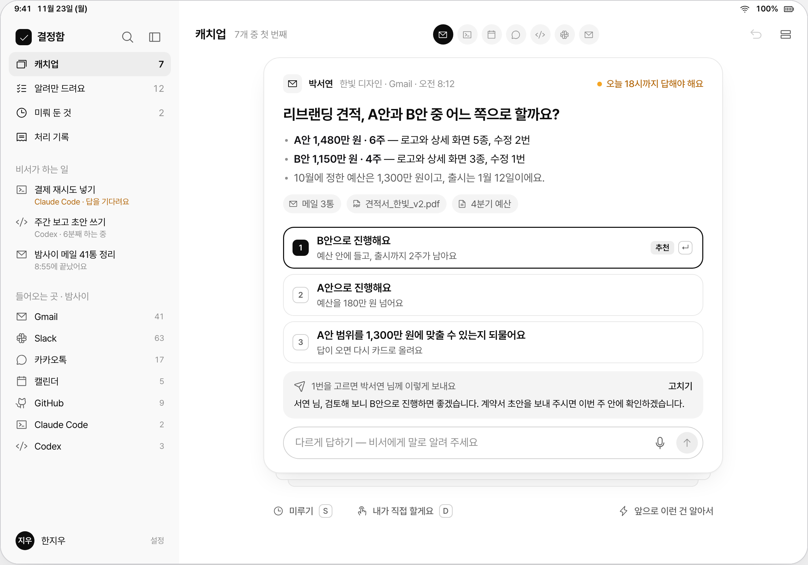
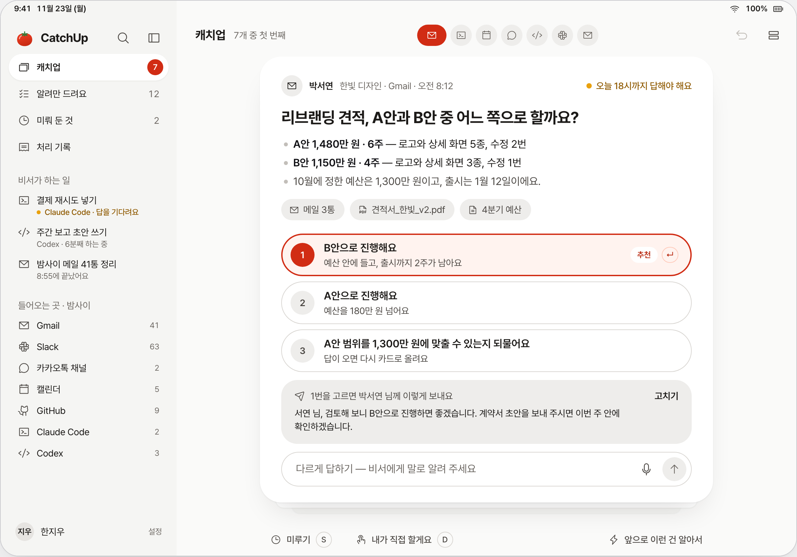
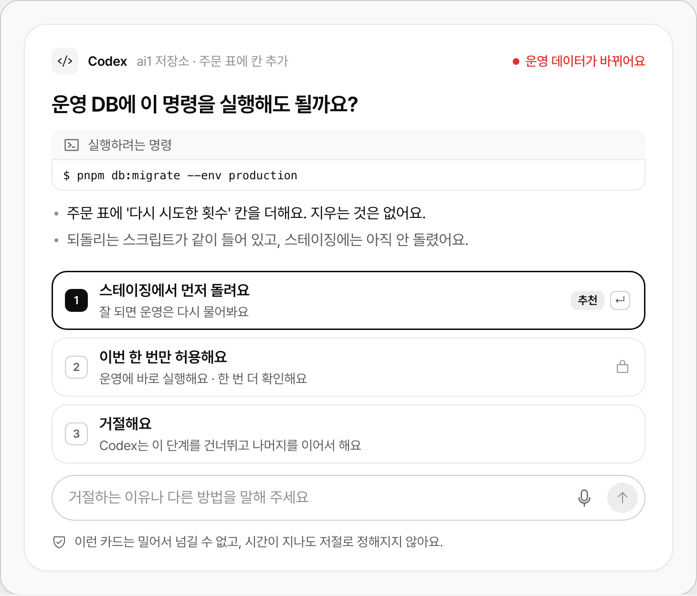
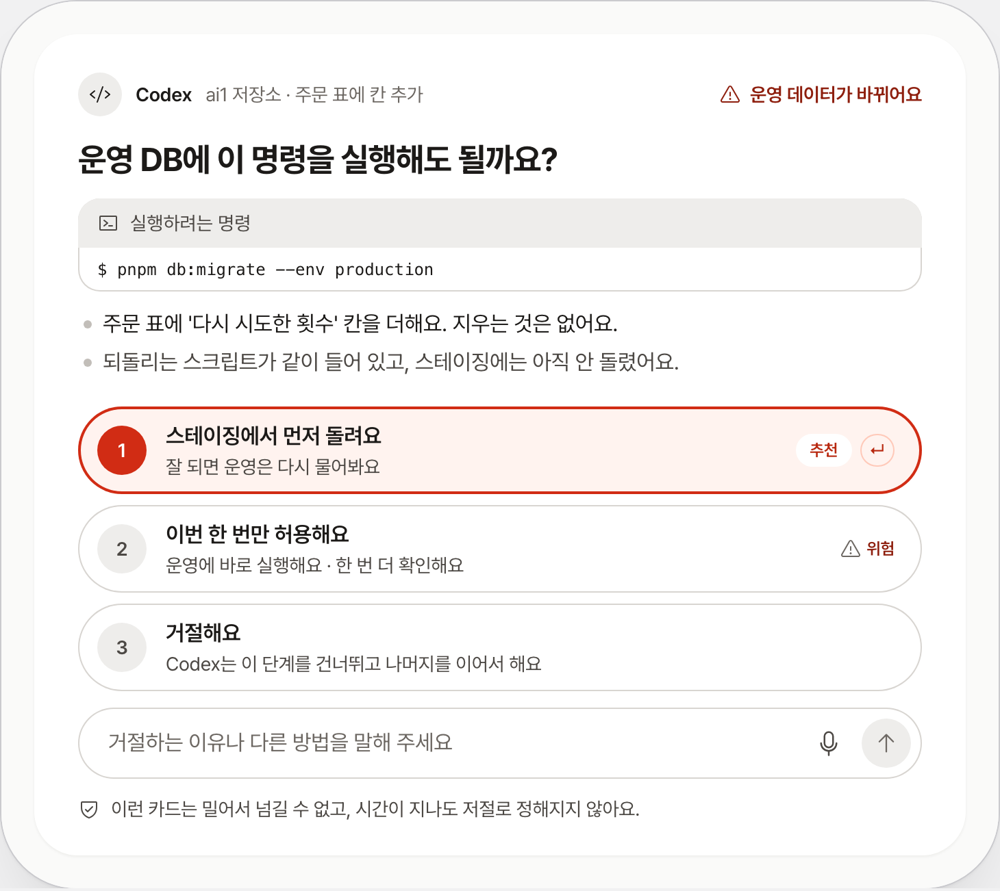
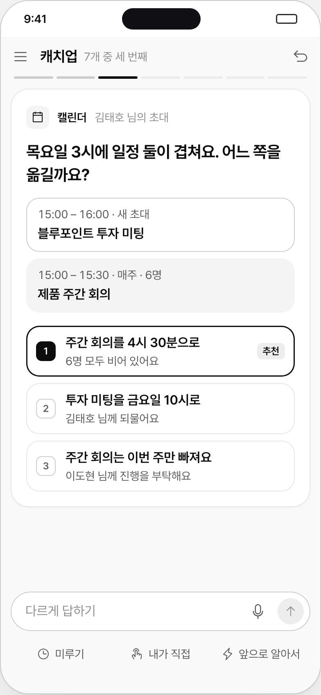
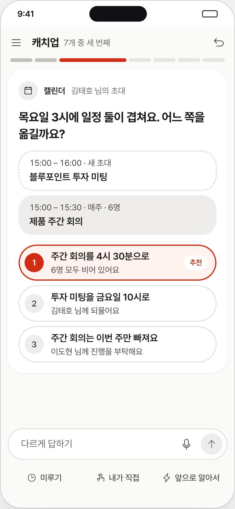
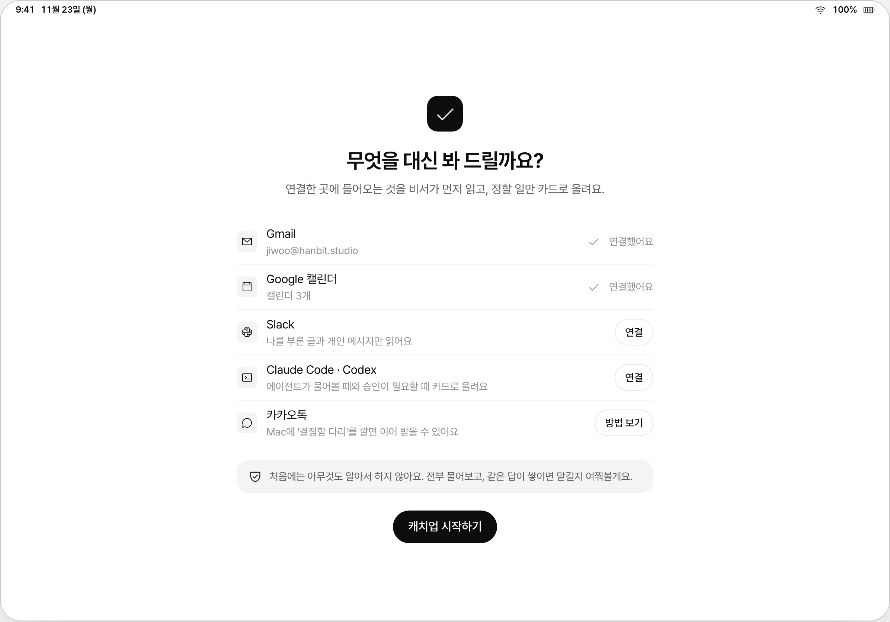
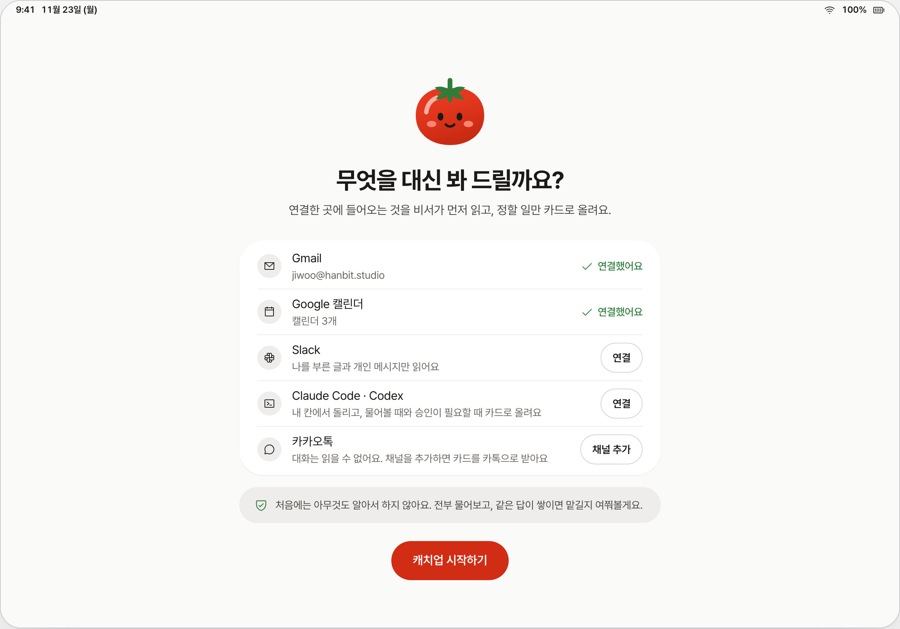

docs/design-system/tokens.css · components.css누르는 것은 끝이 둥글고, 케첩 빨강은 누를 곳에만 칠해요
앞선 시안은 OpenAI가 공개한 토큰 값을 빌려 그렸어요. 그래서 카드 모서리는 24, 선택지 모서리는 16이라 '완전히 둥근' 느낌이 나지 않았고, 색이 검정 하나라 CatchUp만의 얼굴이 없었어요. 이번에 CatchUp만의 토큰 · 컴포넌트 · 로고 · 비서 캐릭터를 만들었어요. 결정함 보드의 화면 12장은 이제 이 디자인 시스템에서만 그려요(components.css를 그대로 읽어요). 구현 전이고, 화면 속 이름 · 숫자는 예시예요.
끝이 반원이에요
단추 · 선택지 · 입력창 · 알약 · 번호 키 · 사이드바 줄까지 누르는 것은 모두 높이의 반만큼 둥글어요. 담는 것(카드 · 칸)은 32 · 24 · 16 세 단계만 써요.
빨강은 '여기를 누르면 돼요'예요
추천 답 · 주 단추 · 지금 카드에만 케첩 빨강을 칠해요. 그래서 위험은 빨강 칠이 아니라 경고 아이콘과 낱말로 말해요. 기다림은 머스터드, 켜짐 · 끝남은 꼭지 잎 초록이에요.
빨간 느낌은 강조색에만 있어요
바탕 · 회색 · 그늘은 거의 무채색이고, 아주 살짝만 따뜻해요. 붉은 기는 빼서 케첩 빨강이 놓인 곳만 눈에 띄어요. 선 대신 그늘로 나눠요.
같은 화면 · 같은 글인데, 둥근 정도와 빨강 하나로 다른 제품이 돼요
왼쪽은 앞선 보드의 그림이고(OpenAI 토큰 값), 오른쪽은 같은 화면 조각을 이 디자인 시스템으로 다시 구운 거예요. 글과 배치는 그대로 두고 토큰 · 컴포넌트만 바꿨어요. 결정함 보드의 열두 장 모두 같은 방식으로 바뀌었어요.








'케챱'처럼 말랑하고 둥글게, 그래도 결정하는 화면이라 조용하게
CatchUp은 하루에 몇십 번 여는 결정 화면이에요. 귀여움은 이름 · 로고 · 캐릭터 · 둥근 모양에서 오고, 카드 안은 조용해야 10초 안에 정할 수 있어요. 그래서 '말랑한 껍데기, 조용한 속'을 원칙으로 잡았어요.
네 가지 원칙
결정 카드 · 시트
미리보기 · 일정
바뀔 코드
카드 한 장에 디자인 시스템의 결정이 다 들어 있어요
가장 많이 보는 화면이라 여기서 규칙을 정했어요. 아래 카드는 그림이 아니라 components.css로 그린 실제 부품이에요.
목요일 3시에 일정 둘이 겹쳐요. 어느 쪽을 옮길까요?
- 상태는 점 하나와 한 마디예요. 기한이 있으면 머스터드 점, 위험이면 경고 아이콘과 진한 빨강 낱말, 급하지 않으면 점 없이 회색 글자예요. 카드에 색 띠나 색 배경을 깔지 않아요.
- 카드 안 칸은 모서리 24예요. 카드(32)보다 한 단계 작아서 '카드 안에 든 것'으로 읽혀요. 새로 생기는 것(새 초대)만 흰 바탕에 선을 둘러 구별해요.
- 추천 답이 이 화면의 유일한 빨강이에요. 끝이 반원인 줄에 2px 빨강 테두리, 번호 동그라미를 빨강으로 채워요. ↵ 한 번이면 이 답이에요. 고른 순간에는 줄 전체가 빨강으로 차요(
.cu-opt.picked). - 입력창도 끝이 반원이에요. 높이 52, 보내기 동그라미 36. 글을 쓰면 테두리가 진해지고 보내기가 빨강으로 바뀌어요. ChatGPT 입력창과 같은 모양이라 처음 써도 익숙해요.
- 남은 카드는 아래로 겹쳐 보여요. 카드와 같은 반지름으로 두 장이 비쳐요. 둘째는 흰색, 셋째는 바탕에 가까운 색이라 깊이가 생겨요.
토마토 하나와 거의 무채색인 회색, 그리고 케첩 옆의 머스터드와 잎
원료 색(이름)과 뜻 색(쓰임)을 나눴어요. 화면 코드는 뜻 색만 써요. 숫자는 흰 바탕에서 잰 대비예요(WCAG). 본문 글자는 모두 4.5 : 1을 넘어요. 앞선 시안의 셋째 글자 #8f8f8f는 3.3 : 1이라 기준에 못 미쳤는데, 이번에 --cu-fg-3 5.5 : 1로 고쳤어요. v0.2(2026-11-21 피드백)에서 회색 단계의 붉은 기를 뺐어요. 채도를 약 1/3로 줄이고, 색조를 빨강(20°)에서 아주 옅은 노랑(30~60°) 쪽으로 옮겼어요.
--cu-tomato-50 … 900--cu-warm-0 … 950 (거의 무채색, 아주 살짝 따뜻하게)바탕 · 글자 · 선
--cu-bg-canvaswarm-25--cu-bg-surfacewarm-0--cu-bg-sidebarwarm-50--cu-bg-softwarm-100--cu-fg17.4 : 1--cu-fg-29.1 : 1--cu-fg-35.5 : 1--cu-line-strongwarm-200강조 — 누를 곳
--cu-accent흰 글자 5.15 : 1--cu-accent-text6.3 : 1--cu-accent-softtomato-50--cu-focus3px--cu-tomato-500글자에 안 써요로고의 토마토 500은 흰 글자 대비가 4.25 : 1이라 단추에는 한 단계 진한 600을 써요.
상태 — 점 하나와 한 마디
--cu-wait-dot점만--cu-wait5.78 : 1--cu-ok5.11 : 1--cu-danger8.9 : 1--cu-diff-add--cu-diff-del위험은 토마토 800(검붉은 색) 글자 + 경고 아이콘이에요. 칠하지 않아서 '누를 곳' 빨강과 헷갈리지 않아요. 색을 못 구별해도 아이콘과 낱말로 읽혀요.
Pretendard 하나, 굵기로 위계를 만들고 한글은 낱말 단위로 줄을 바꿔요
크기는 12 · 14 · 16 · 18 · 20 · 24 · 32 일곱 단계예요. 제목은 700, 이름 · 선택지는 600, 본문은 400이에요. 한글이 낱말 중간에서 끊기지 않게 word-break: keep-all을 바탕에 두었어요. 숫자는 늘 고정폭 숫자예요.
모서리 값은 넷뿐이에요. 반원 · 32 · 24 · 16
앞선 시안은 8 · 12 · 16 · 24 · 알약까지 다섯 값이 섞여서 선택지 줄(16)이 각져 보였어요. 이번에는 누르는 것을 모두 반원으로 모으고, 담는 것만 세 단계로 남겼어요. 높이도 32 · 40 · 52 · 64 넷이에요.
--cu-r-full단추 · 선택지 · 입력창 · 알약 · 키 · 사이드바 줄 · 출처 동그라미
--cu-r-card 32결정 카드 · 시트 · 연결 목록 상자 (아이폰 카드 28)
--cu-r-panel 24미리보기 · 일정 비교 · 약속 상자 · 알림
--cu-r-inset 16바뀔 코드 · 작은 칸
높이
| 토큰 | 값 | 쓰는 곳 |
|---|---|---|
--cu-h-sm | 32 | 출처 동그라미 · 근거 알약 · 진행 칸 |
--cu-h-md | 40 | 단추 · 사이드바 줄 · 나눔 단추 |
--cu-h-lg | 52 | 입력창 · 큰 단추 |
--cu-h-option | 64 | 선택지(이름 + 설명 두 줄) |
손가락으로 누르는 것은 40 이상이에요. 아이폰 아래 단추 줄은 44예요(Apple HIG 최소 44pt).
그늘
| 토큰 | 쓰는 곳 |
|---|---|
--cu-shadow-card | 지금 카드 하나 — 화면에서 가장 높이 떠요 |
--cu-shadow-pop | 토스트 · 팝오버 |
--cu-shadow-lift | 고른 사이드바 줄 · 나눔 단추 · 겹친 카드 |
그늘 색은 글자색과 같은 거의 검정 rgb(28 26 24)이에요. 바탕과 같은 색조라 따로 놀지 않아요.
간격 · 움직임
| 토큰 | 값 |
|---|---|
간격 --cu-s-1 … 12 | 4 · 8 · 12 · 16 · 20 · 24 · 32 · 40 · 48 |
--cu-dur-fast | 120ms — 눌림(살짝 작아져요 .98) |
--cu-dur | 200ms — 상태 바뀜 |
--cu-dur-card · --cu-ease-spring | 320ms — 고른 선택지가 살짝 튀고 카드가 넘어가요 |
'동작 줄이기'가 켜져 있으면 튀는 움직임을 빼고 바로 바꿔요.
컴포넌트 34개면 결정함의 모든 화면을 그려요
클래스 이름이 곧 만들 컴포넌트 이름이에요(.cu-opt = <OptionRow>). 아래 견본은 components.css로 그린 실제 부품이고, 결정함 보드의 화면도 이 부품만으로 그렸어요.
컴포넌트 목록
| 컴포넌트 | 클래스 | 상태 · 모양 | 쓰는 화면 |
|---|---|---|---|
| DecisionCard | .cu-card (.flat .p) | 지금 카드 · 따로 보기 · 아이폰 | 캐치업 · 카드 종류 · 아이폰 |
| CardSource · DueTag | .cu-from .cu-tile .cu-due | 기한 · 위험 · 급하지 않음 | 모든 카드 |
| Summary · EvidenceChip | .cu-sum .cu-chip | 굵게 · 흐리게 / 칠 · 선 | 모든 카드 |
| OptionRow · RecommendBadge · KeyHint | .cu-opt .cu-rec .cu-kbd | 보통 · 추천 · 고름 · 흐림 · 잠김 | 모든 카드 |
| EffectPreview · CodeDiff · SlotCompare | .cu-prev .cu-code .cu-slots | 나갈 글 · 바뀔 코드 · 겹친 일정 | 메일 · 코딩 에이전트 · 캘린더 카드 |
| Composer · ChatBubble | .cu-composer .cu-said .cu-work | 빈 칸 · 쓰는 중 / 내 말 · 비서가 한 일 | 모든 카드 · 주관식 |
| CardDeck · CardProgress | .cu-deck .cu-peek .cu-steps .cu-pbar | 끝남 · 지금 · 남음 | 캐치업 · 아이폰 |
| Sidebar · SidebarItem · RunItem · SourceRow | .cu-side .cu-nav .cu-run .cu-src-row | 고름 · 보통 / 기다림 · 하는 중 | 아이패드 · 웹 |
| TopBar · IconButton | .cu-top .cu-ib | 켜짐 · 꺼짐 | 모든 화면 |
| Button · SegmentedControl · Switch | .cu-btn .cu-seg .cu-switch | 주 · 보조 · 투명 · 큰 / 켜짐 · 꺼짐 | 모든 화면 |
| ListRow · SectionHeader · Link | .cu-row .cu-h .cu-link | 되돌리기 · 실패 · 연결됨 | 처리 기록 · 다 봤어요 · 알려만 |
| Toast | .cu-toast | 되돌리기 | 답한 뒤 10초 |
| EmptyState · Mascot | .cu-center .cu-mascot | 기본 · 생각 · 다 봤어요 · 걱정 | 처음 · 다 봤어요 · 연결 끊김 |
| Logo · AppIcon · Avatar | .cu-logo .cu-appicon .cu-avatar | 큰 · 작은 표지 | 사이드바 · 알림 · 내 정보 |
| LockNotification(iOS 시스템) | .cu-noti .cu-nacts | 시스템 모양 그대로 | 잠금 화면 |
토마토 하나가 로고이고, 같은 토마토에 얼굴을 그리면 비서예요
'CatchUp'을 소리 내면 '케챱'이라, 케첩의 토마토를 바탕으로 삼았어요. 로고는 얼굴 없는 토마토, 비서는 같은 토마토에 눈 · 입 · 볼을 더한 거예요. 원본은 brand/build_brand.py 한 파일에서 만들어서 색을 바꾸면 모두 같이 바뀌어요.
로고
| 파일 | 쓰는 곳 |
|---|---|
brand/mark.svg | 28px 이상 — 빛과 아래 그늘이 있어요 |
brand/mark-small.svg | 24px 이하 — 빛 · 그늘을 빼고 잎을 네 장으로 줄였어요 |
brand/wordmark.svg | 로그인 · 소개 페이지. 글자는 Pretendard 750 |
brand/sprite.svg | 화면용 묶음(#cu-mark · #cu-mascot-*) |
비서 캐릭터 — 표정 넷
이름은 아직 없어요(열린 질문 Q1). 화면에서는 '비서'라고만 불러요.
다크에서는 뜻 색만 바꿔요. 부품 코드는 그대로예요
1차에서는 다크 화면을 만들지 않기로 했어요(plan.md). 대신 토큰 짝을 미리 정해 두고, 같은 부품이 다크에서 깨지지 않는지 한 번 그려 봤어요. 아래 두 칸은 같은 HTML이고 data-theme="dark"만 다르게 줬어요.
결제 재시도를 어디에서 하게 할까요?
결제 재시도를 어디에서 하게 할까요?
화면은 이 디자인 시스템에서만 그려요
지킬 것
tokens.css의 변수만 써요. 필요한 값이 없으면 토큰을 먼저 더하고 이 보드에 적어요..continuous)을 써요. 웹의 반원과 같은 값이에요.파일
| 파일 | 내용 |
|---|---|
tokens.css | 원료 색 · 뜻 색 · 모서리 · 높이 · 간격 · 그늘 · 글자 · 움직임, 다크 짝 |
components.css | 컴포넌트 34개. 결정함 보드가 이 파일을 그대로 읽어요 |
brand/ | 로고 · 비서 캐릭터 SVG와 만드는 스크립트 |
README.md | 원칙 · 토큰 표 · 컴포넌트 표 · 다시 굽기 |
catchup-design-system.html | 이 보드(한 파일로 묶은 것) |
shots/before · shots/after | 01장의 전 · 후 그림 |
캐릭터 이름과 위험 색만 정해 주시면 돼요
정해진 것
열린 질문
#FAFAF9)에 흰 카드예요. 완전한 흰 바탕을 원하시면 --cu-bg-canvas 하나만 바꾸면 돼요.